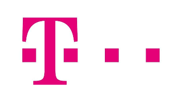

Collaborations
Current collaborations
Research groups we are working with, and the topics we share.
-
Industry
Huawei ↗
Network Traffic and AI enabled Network
-
Industry
Accenture ↗
Accenture Italia, Milan (contact: Alessandro Vanacore)
Energy-efficient wireless sensor networks
-
Industry
Deloitte ↗
Deloitte Digital · Digita Academy, with the University of Napoli Federico II
Digita Academy, the advanced training course started in 2017 by the University of Napoli Federico II and Deloitte Digital
-
University
University of Bologna, Italy ↗
Contact: Franco Callegati
SDN controllers and AI-based network intrusion detection
-
University
University of Minho (Centro ALGORITMI), Portugal ↗
Contact: Solange Rito Lima, Paulo Carvalho
Machine learning for adaptive sensing in wireless sensor networks and data offloading in urban networks
-
University
University College Dublin, Ireland ↗
Contact: Anca Delia Jurcut
Few-shot learning for resilient intrusion detection
1 joint paper
-
University
University of Messina, Italy ↗
Contact: Giovanni Merlino
Security, privacy and resource efficiency in IoT-Fog networks
Past collaborations
-
Industry

Roger Karrer ↗
Deutsche Telekom Laboratories, Berlin, Germany
Analysis and performance evaluation of the MagNets WiFi backbone
7 joint papers
- Challenges in Second-Generation Wireless Mesh Networks 2008
- High-speed backhaul networks: Myth or reality? 2008
- Wireless Networks Test-beds: When Heterogeneity Plays with Us 2008
- MagNets - experiences from deploying a joint research-operational next-generation wireless access network testbed 2007
- High-speed wireless backbones: measurements from MagNets 2007
- 2nd Generation Wireless Mesh Networks: Technical, Economical and Social Challenges 2007
- Experimental evaluation and characterization of the magnets wireless backbone 2006
-
University
Ningbo University, China ↗
Contact: Haiming Chen
Edge computing for industrial IoT, software-defined IoT services and Wi-Fi based human sensing
7 joint papers
- MCOTM: Mobility-aware computation offloading and task migration for edge computing in industrial IoT 2023
- Human behavior sensing: challenges and approaches 2020
- Wi-CR: Human Action Counting and Recognition with Wi-Fi Signals 2019
- eMES: Easing Maintenance of Entity Services in Service Oriented Software-Defined Internet of Things 2019
- A Formal Methodology for Easing Development and Maintenance of Entity Services in Service Oriented Software-Defined Internet of Things 2019
- TaRad: A Thing-Centric Sensing System for Detecting Activities of Daily Living 2019
- Evaluation of SDN-based bandwidth estimation in Mobile Broad Band networks 2018
-
University
Saint Louis University, USA ↗
Contact: Flavio Esposito
Network virtualization, SDN controllers and mobile traffic prediction
4 joint papers
- Prediction of Mobile-App Network-Video-Traffic Aggregates using Multi-task Deep Learning 2022
- A Near Optimal Reliable Orchestration Approach for Geo-Distributed Latency-Sensitive SFCs 2020
- Scalable Provisioning of Virtual Network Functions via Supervised Learning 2019
- Flock: A Live Migration Protocol for SDN Controllers 2019
-
University
University of Surrey, UK ↗
Contact: Mohammad Shojafar
Secure task scheduling in SDN-based IoT-Fog networks
3 joint papers
- S-FoS: A secure workflow scheduling approach for performance optimization in SDN-based IoT-Fog networks 2022
- FUPE: A security driven task scheduling approach for SDN-based IoT–Fog networks 2021
- FPFTS: A joint fuzzy particle swarm optimization mobility‐aware approach to fog task scheduling algorithm for Internet of Things devices 2020
-
University
Sorbonne Université (LIP6, formerly UPMC), Paris, France ↗
Contact: Timur Friedman, Renata Teixeira
Bufferbloat, queuing delays and broadband measurement
8 joint papers
- Distributed Active Measurement of Internet Queuing Delays 2014
- Remotely Gauging Upstream Bufferbloat Delays 2013
- Passive bufferbloat measurement exploiting transport layer information 2013
- Measuring home broadband performance 2012
- Inferring the buffering delay of remote BitTorrent peers under LEDBAT vs TCP 2012
- Broadband internet performance 2011
- Integration of 3G Connectivity in PlanetLab Europe 2010
- Traffic analysis of peer-to-peer IPTV communities 2008
-
University
University of Campania "Luigi Vanvitelli", Italy ↗
Contact: Maurizio D’Arienzo, Francesco Palmieri
Traffic modeling, bandwidth estimation and network measurement
6 joint papers
- Unified architecture for network measurement: The case of available bandwidth 2011
- UANM: a platform for experimenting with available bandwidth estimation tools 2010
- Internet traffic modeling by means of Hidden Markov Models 2008
- An HMM Approach to Internet Traffic Modeling 2008
- Transparent Network Configuration for Internet Telephony Traffic 2007
- End-to-end packet-channel Bayesian model applied to heterogeneous wireless networks 2005
-
University
Università Campus Bio-Medico di Roma, Italy ↗
Contact: Giulio Iannello
Heterogeneous wireless networks and Internet traffic modeling
6 joint papers
- An HMM Approach to Internet Traffic Modeling 2008
- Seamless internetworking of WLANs and cellular networks: architecture and performance issues in a mobile IPv6 scenario 2005
- Analysis and Experimentation over Heterogeneous Wireless Networks 2005
- End-to-end packet-channel Bayesian model applied to heterogeneous wireless networks 2005
- Measuring Quality of Service Parameters over Heterogeneous IP Networks 2005
- Experimental Analysis of Heterogeneous Wireless Networks 2004
-
University
Roma Tre University, Italy ↗
Contact: Claudio Squarcella, Marco Chiesa
Internet outages caused by censorship and wireless sensor networks
-
University
UNSW Sydney, Australia ↗
Contact: Vinh Bui, Weiping Zhu
Multipath data transfer and end-to-end delay forecasting
-
University
Budapest University of Technology and Economics, Hungary ↗
Contact: Sándor Molnár, Péter Megyesi
Available bandwidth measurement in software-defined networks
-
University
Universidade Federal de Minas Gerais, Brazil ↗
Contact: Ítalo Cunha
Internet path measurement and route prediction
-
University
University of Coimbra, Portugal ↗
Contact: Marília Curado
Traffic management and QoE handover in heterogeneous wireless networks
2 joint papers
-
University
Telecommunications Research Center Vienna (FTW), Austria
Contact: Sandford Bessler
Traffic engineering and DNS-based cybercrime detection
-
University
National and Kapodistrian University of Athens, Greece ↗
Contact: Ioannis Stavrakakis
Traffic management, security and trust
2 joint papers
- Security and Trust 2006
- Traffic Management 2003
-
University
Swedish Institute of Computer Science (now RISE), Sweden ↗
Contact: Ian Marsh
Traffic engineering and traffic management
2 joint papers
-
University
Universitat Politècnica de Catalunya, Spain ↗
Contact: Pere Barlet-Ros
Traffic classification and traffic engineering
2 joint papers
-
University
University of Warwick, UK ↗
Contact: Leandro Pecchia
Artificial intelligence for e-health and wearable sensing
-
Cedric Westphal ↗
DoCoMo USA Labs, Palo Alto, USA
Compression of monitoring data
-
Renato Lo Cigno ↗
University of Trento, Italy
Inter-vehicular communications
4 joint papers
- Platooning Maneuvers in Vehicular Networks: A Distributed and Consensus-Based Approach 2018
- A Consensus-Based Approach for Platooning with Intervehicular Communications and Its Validation in Realistic Scenarios 2016
- A consensus-based approach for platooning with inter-vehicular communications 2015
- An open source traffic engineering toolbox 2005
-
Ethan Katz-Bassett ↗
University of Southern California, USA
Internet measurement
-
Mahesh K. Marina ↗
University of Edinburgh, UK
Broadband performance monitoring
-
Pascal Mérindol ↗
University of Strasbourg, France
Network topologies
5 joint papers
- The Art of Detecting Forwarding Detours 2021
- Où un opérateur IP cache-t-il ses détours ? 2021
- Filtering the Noise to Reveal Inter-Domain Lies 2019
- Quantifying and mitigating IGMP filtering in topology discovery 2012
- Topology Discovery at the Router Level: A New Hybrid Tool Targeting ISP Networks 2011
-
Fabio Ricciato ↗
University of Ljubljana, Slovenia
Traffic monitoring and analysis
-
Nick Feamster ↗
Princeton University, USA
Network neutrality and broadband performance evaluation
-
Benoit Donnet ↗
Université catholique de Louvain, Belgium
Topology discovery
5 joint papers
- Hic Sunt Proxies: Unveiling Proxy Phenomena in Mobile Networks 2019
- Hic sunt NATs: Uncovering address translation with a smart traceroute 2017
- Quantifying and mitigating IGMP filtering in topology discovery 2012
- Topology Discovery at the Router Level: A New Hybrid Tool Targeting ISP Networks 2011
- An open source traffic engineering toolbox 2005
-
Ernst Biersack ↗
Eurécom, Sophia Antipolis, France
Passive analysis of 3G/4G networks
-
KC Claffy ↗
Cooperative Association for Internet Data Analysis (CAIDA), San Diego, USA
Traffic classification
6 joint papers
- Sibyl : A Practical Internet Route Oracle 2016
- Traffic identification engine: an open platform for traffic classification 2014
- Analysis of a “/0” Stealth Scan From a Botnet 2014
- Analysis of Country-Wide Internet Outages Caused by Censorship 2014
- Reviewing Traffic Classification 2013
- Issues and future directions in traffic classification 2012
-
Dario Rossi ↗
TELECOM ParisTech (formerly ENST), France
Impact of sampling on traffic monitoring and analysis, traffic classification
13 joint papers
- Lightweight GenAI for Network Traffic Generation: Fidelity, Augmentation, and Classification 2026
- Localizing and Exploiting Concept Areas in LLMs for Downstream Classification Tasks 2025
- MEMENTO: A novel approach for class incremental learning of encrypted traffic 2024
- Benchmarking Class Incremental Learning in Deep Learning Traffic Classification 2023
- Many or Few Samples?: Comparing Transfer, Contrastive and Meta-Learning in Encrypted Traffic Classification 2023
- A First Look at Class Incremental Learning in Deep Learning Mobile Traffic Classification 2021
- Distributed Active Measurement of Internet Queuing Delays 2014
- Reviewing Traffic Classification 2013
- Remotely Gauging Upstream Bufferbloat Delays 2013
- Passive bufferbloat measurement exploiting transport layer information 2013
- Exploiting packet‐sampling measurements for traffic characterization and classification 2012
- Inferring the buffering delay of remote BitTorrent peers under LEDBAT vs TCP 2012
- On the impact of sampling on traffic monitoring and analysis 2010
-
Rajiv Chakravorty ↗
Systems Research Group, University of Cambridge Computer Laboratory, UK
Performance evaluation of GPRS networks
-
Prasad Calyam ↗
The Ohio State University and Ohio Supercomputer Center, USA
Multimedia traffic characterization and modeling